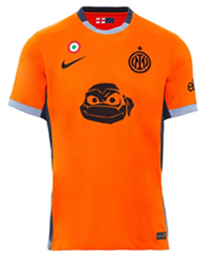
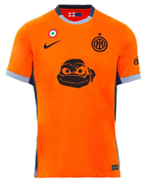

Il Football Club Internazionale Milano, meglio conosciuto come Internazionale o più semplicemente come Inter, è una società calcistica italiana con sede nella città di Milano.
| GIOCATORI | RUOLO | STAGIONI CLUB | STAGIANI DA CAPITANO |
|---|---|---|---|
| 1. Hernst Marktl | TZ | 1909 | 1909 (1) |
| 2. Virgilio Fossati | M | 1909-1915 | 1909-1915 (6) |
| 3. Ermanno Aebi | CC | 1910-1922 | 1915-1922 (7) |
| 4. Leopoldo Conti | CA | 1919-1920 e 1922-1931 | 1922-1931 (9) |
| 5. Giuseppe Meazza | CA | 1927-1940 e 1946-1947 | 1931-1940 (9) |
| 6. Attilio Demaría | CC | 1931-1936 e 1938-1943 | 1940-1943 (3) |
| 7. Aldo Campatelli | M | 1936-1950 | 1943-1950 (7) |
| 8. Attilio Giovannini | DC/M | 1948-1954 | 1950-1954 (4) |
| 9. Gino Armano | A | 1948-1956 | 1954-1956 (2) |
| 10. Giovanni Giacomazzi | DC | 1949-1957 | 1956-1957 (1) |
| 11. Giovanni Invernizzi | M | 1949-1950, 1951-1952 e 1954-1960 | 1957-1958 (1) |
| 12. Antonio Angelillo | CA | 1957-1961 | 1958-1961 (3) |
| 13. Bruno Bolchi | M | 1956-1964 | 1961-1962 (1) |
| 14. Armando Picchi | L | 1960-1967 | 1962-1967 (5) |
| 15. Mario Corso | T/R | 1957-1973 | 1967-1970 (3) |
| 16. Giovanni Giacomazzi | DC | 1949-1957 | 1956-1957 (1) |
| 17. Sandro Mazzola | T/CA | 1960-1977 | 1970-1977 (7) |
| 18. Giacinto Facchetti | TS/L | 1960-1978 | 1977-1978 (1) |
| 19. Graziano Bini | L | 1971-1985 | 1978-1985 (7) |
| 20. Alessandro Altobelli | CA | 1977-1988 | 1985-1988 (3) |
| 21. Giuseppe Baresi | DC/M | 1977-1992 | 1988-1992 (4) |
| 22. Giuseppe Bergomi | L | 1979-1999 | 1992-1999 (7) |
| 23. Ronaldo | CA | 1997-2002 | 1999-2001 (3) |
| 24. Javier Zanetti | TD/M | 1995-2014 | 2001-2014 (13) |
| 25. Andrea Ranocchia | DC | 2011-2016, 2016-2017, 2017-2022 | 2014-2015 (1) |
| 26. Mauro Icardi | CA | 2013-2019 | 2015-2019 (4) |
| 27. Samir Handanovič | P | 2012-2023 | 2019-2023 (5) |
| 28. Lautaro Martínez | CA | 2018-presente | 2023-presente (1) |
P: Portiere, L: Libero, DC: Difensore centrale (stopper), TD: Terzino destro, TS: Terzino sinistro, TZ: Terzino, M: Mediano, CC: Centrocampista centrale, R: Regista, A: Ala, T: Trequartista, CA: Centravanti.
| COPPA | ANNO DI VINCITA | NUMERO DEL TROFEO |
|---|---|---|
| Serie A | 1909-1910 | 1° titolo |
| Serie A | 1919-1920 | 2° titolo |
| Serie A | 1929-1930 | 3° titolo |
| Serie A | 1937-1938 | 4° titolo |
| Coppa Italia | 1938-1939 | 1° titolo |
| Serie A | 1939-1940 | 5° titolo |
| Serie A | 1952-1953 | 6° titolo |
| Seria A | 1953-1954 | 7° titolo |
| Serie A | 1962-1963 | 8° titolo |
| Coppa dei Campioni | 1963-1964 | 1° titolo |
| Serie A | 1964-1965 | 9°titolo |
| Coppa dei Campioni | 1964-1965 | 2° titolo |
| Coppa Intercontinentale | 1964-1965 | 1° titolo |
| Serie A | 1965-1966 | 10° titolo |
| Coppa Intercontinentale | 1965-1966 | 2° titolo |
| Serie A | 1970-1971 | 11° titolo |
| Coppa Italia | 1977-1978 | 2° titolo |
| Serie A | 1979-1980 | 12°titolo |
| Coppa Italia | 1981-1982 | 3° titolo |
| Serie A | 1988-1989 | 13° titolo |
| Supercoppa Italiana | 1989-1990 | 1° titolo |
| Coppa Uefa | 1990-1991 | 1° titolo |
| Coppa Uefa | 1993-1994 | 2° titolo |
| Coppa Uefa | 1997-1998 | 3° titolo |
| Coppa Italia | 2004-2005 | 4°titolo |
| Serie A | 2005-2006 | 14° titolo |
| Coppa Italia | 2005-2006 | 5° titolo |
| Supercoppa Italiana | 2005-2006 | 3° titolo |
| Serie A | 2006-2007 | 15° titolo |
| Supercoppa Italiana | 2006-2007 | 2° titolo |
| Serie A | 2007-2008 | 16° titolo |
| Serie A | 2008-2009 | 17° titolo |
| Supercoppa Italiana | 2008-2009 | 4° titolo |
| Serie A | 2009-2010 | 18° titolo |
| Coppa Italia | 2009-2010 | 6° titolo |
| Champions League | 2009-2010 | 3° titolo |
| Coppa Italia | 2010-2011 | 7° titolo |
| Supercoppa Italiana | 2010-2011 | 5° titolo |
| Coppa del Mondo per Club | 2010-2011 | 1° titolo |
| Serie A | 2020-2021 | 19° titolo |
| Coppa Italia | 2021-2022 | 8° titolo |
| Supercoppa Italiana | 2021-2022 | 6° titolo |
| Coppa Italia | 2022-2023 | 9° titolo |
| Supercoppa Italiana | 2022-2023 | 7° titolo |
| Supercoppa Italiana | 2023-2024 | 8° titolo |
| Serie A | 2023-2024 | 20° titolo |